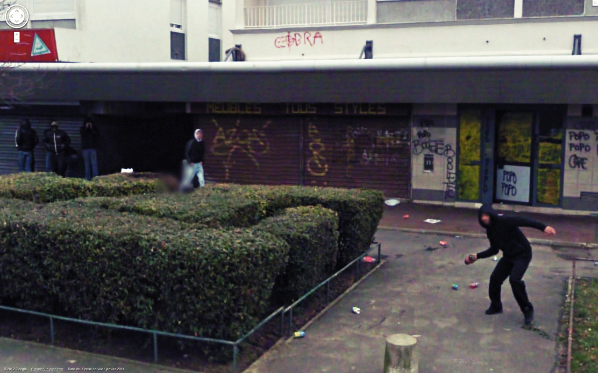

Masked people. Some people dislike having their pictures taken, some ignore it and others think its funny or interesting and might even pose for the camera.

Although most people in street view images often ignore the camera, it is interesting to see how some react to their photo being taken. While most make friendly gestures, others may appear aggressive.